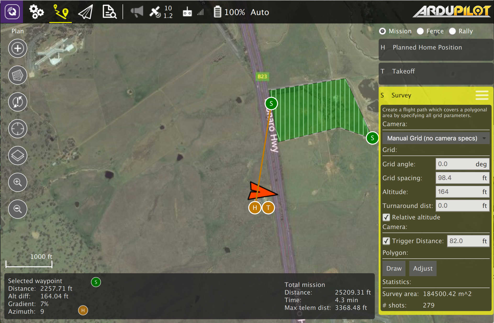
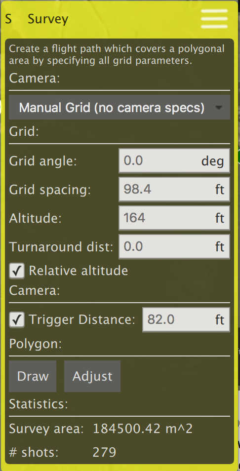
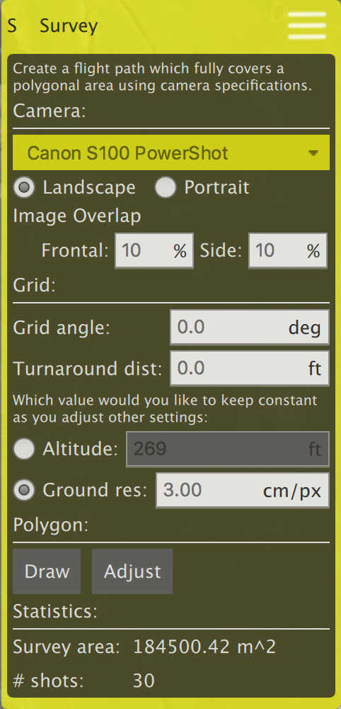
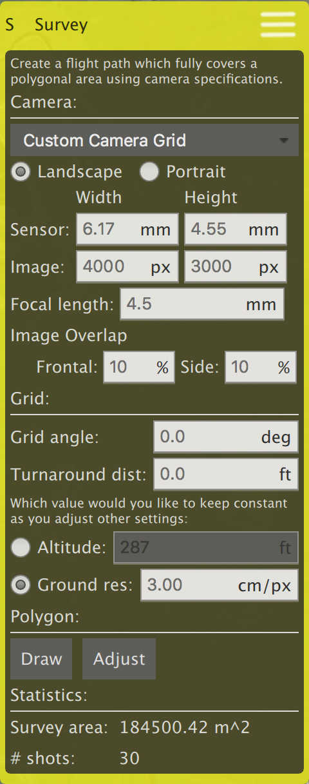

Plan - Survey
A survey allows you to create a grid flight pattern over a polygonal area. You can specify the polygon as well as the specifications for the grid and camera settings appropriate for creating geotagged images.

To draw the polygon for your survey, click the "Draw" button and click in the map to set polygon vertices.
There are multiple options for a survey grid. You can select the main option from the dropdown at the top of the editor.
Manual Grid

The Manual Grid option allows you to specify all the values for generating the grid pattern over the polygon by hand.
- Grid angle - The angle for the parallel flight tracks of the grid. For example 0 degrees will generate parallel lines which travel north/south.
- Grid spacing - The distance between each parallel flight track.
- Altitude - The altitude to fly the entire grid pattern.
- Turnaround distance - The mount of additional distance to fly past the edge of the polygon before performing the turnaround for the next flight track.
- Trigger Distance - Used to trigger an image taken by the camera based on distance flown.
Camera

Selecting a known camera from the option dropdown allows you to generate a grid pattern based on the camera's specifications.
- Landscape/Portrait - Specifies the orientation that the camera is placed on the vehicle.
- Image Overap - Allows you to specify the amount of overlap you want between each image.
- Altitude - Selecting this value allows you to specify the altitude for the survey. The ground resolution will be calculated and shown for the specified altitude.
- Ground resolution - Selecting this value allows you to specify the ground resolution you want for each image. The altitude required to achieve this resolution is calculated and shown.
Custom Camera

The custom camera option is similar to the known camera option. The difference is that you must specify the details for the camera specifications yourself.
- Sensor width/height - The size of the image sensor of the camera.
- Image width/height - The resolution of the image captured by the camera.
- Focal Length - The focal length of the camera lens.